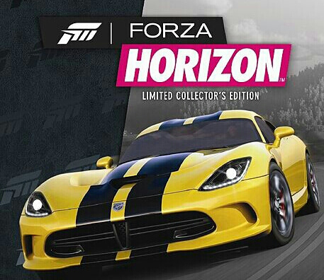
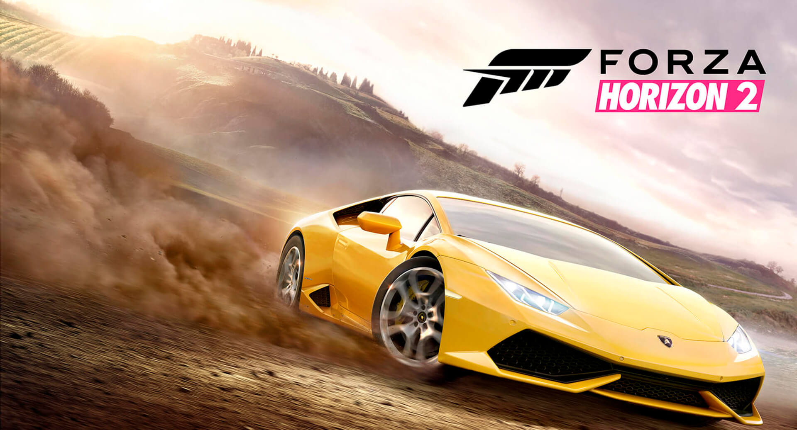
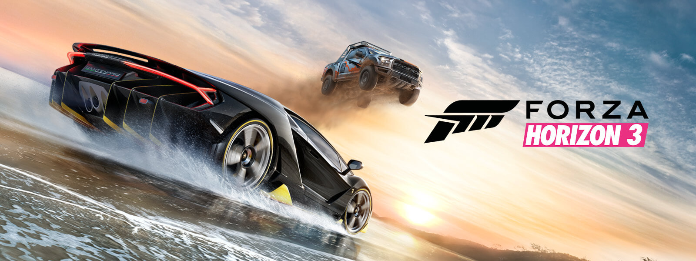
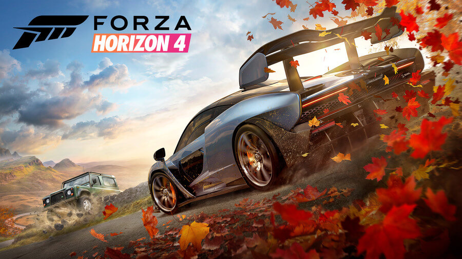

Forza Horizon 1
26.06.18 11:18
Это часть считается больше спин-оффом, чем полноценным продолжением франшизы.
Игра вышла 26 октября 2012 года.
Forza Horizon 2
30.06.18 21:18
Компьютерная игра в жанре гоночных игр с открытым миром, разработанная
для игровых приставок Xbox 360 и
Xbox One от Microsoft.
Forza Horizon 3
12.06.18 21:08
Видеоигра в жанре аркадного автосимулятора, разработанная Playground Games и выпущенная Microsoft Studios.
Forza Horizon 4
13.07.18 19:07
Видеоигра в жанре автосимулятор
с открытым миром, разработанная
компанией Playground Games
совместно c Turn 10 Studios.